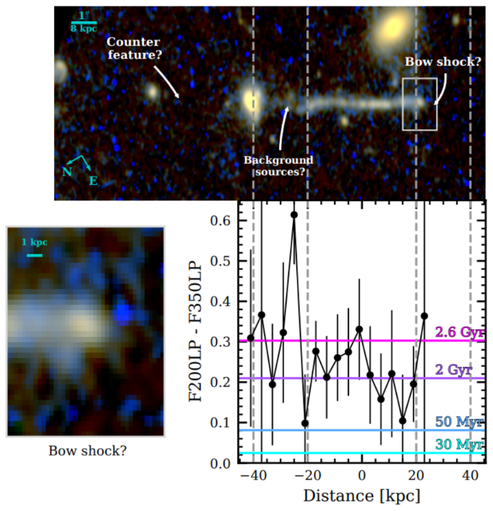
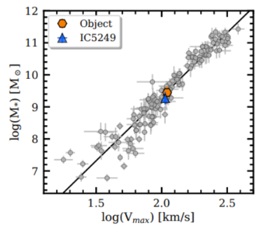

Key Question
Here is a picture of a real astrophysical system in different filters. What is the best plausible theoretical model to describe this system?
What is the best theoretical model to describe this system?

Definitions
Gravitational lensing: An astrophysical phenomenon where a massive galaxy present in between the observer and the source bends light being emitted by the source, such that the observer sees distorted (weakly lensed) or multiple (strongly lensed) images of the same source.

Tully-Fisher relation: A widely verified empirical relationship between the mass or intrinsic luminosity of a spiral galaxy and its asymptotic rotation velocity or emission line width.
Recoil: Merging black holes release a massive amount of energy in the form of gravitational waves, and this can happen anisotropically, kicking the resulting black hole in a direction opposite to the released gravitational waves. This kick is stronger in systems with more asymmetry in the sizes of the merging black holes.
AGN: Active Galactic Nuclei are galaxies with an actively accreting (consuming matter) supermassive black hole (SMBH) at their center. The matter forms a very bright (one of the brightest phenomena in the universe) accretion disc as it spirals into the SMBH. An AGN might also contain twin jets of gas and dust ejected from the center of the galaxy that can rival the galaxy's own size. High redshift AGN are often referred to as quasars.

Redshift (denoted by z): As light moves through expanding space, its waveform gets stretched out, increasing its wavelength and making it redder. Redshift is a measure of this stretching, and is used to determine how far astrophysical objects are from us by relating the stretch in wavelength to distance traveled through expanding space. Higher redshift => object is further away.
Globular clusters: Globular clusters are dense groups of tens of thousands to millions of stars tightly bound by gravity into a spheroidal shape, orbiting galaxies often in their halos at typical velocities of a few hundred km/s.
Sources

Figure 1 from M. M. et al.

Figure 1 from J. S. A. et al.

Figure 2 from J. S. A. et al.

Figure 1 from P. v. D., C. J., et al.

Figure 5 from P. v. D., C. J., et al.
P. v. D., C. J., et al. — “Year and title blinded from debate judges.”
J. S. A. et al. — “Year and title blinded from debate judges.”
Exactly one of these debater's answers matches the answer of the expert who wrote the Key Question.
| Debater A: [Opening] The best plausible theoretical model to describe this system is a runaway supermassive black hole (SMBH) (P. v. D., C. J., et al.). | Debater B: [Opening] The best plausible theoretical model to describe this system is a bulgeless edge-on galaxy (J. S. A. et al.). |
| Debater B: [Question 1] A runaway SMBH scenario would imply two SMBHs interacting in the center of the host galaxy, what evidence do you have of a merger in the galaxy’s history? | Debater A: [Question 1] A linear feature symmetrical to the nucleus of a galaxy can be explained by SMBH-related hypotheses in the absence of gravitational lensing (P. v. D., C. J., et al.). What evidence do you have that this is an edge-on galaxy? |
| Debater A: [Answer 1] The past average star formation rate of the galaxy is an order of magnitude higher than the current star formation rate. Additionally, the irregular shape and compact size of the galaxy boosts its star formation rate surface density. This implies that there was a recent merger or accretion event that funneled gas into the center of the galaxy, both pointing towards SMBH interactions. | Debater B: [Answer 1] The position-velocity distribution of the stars in the extended linear feature strongly resembles the rotation curve of a galaxy. To illustrate this point, the position-velocity curve of the object is compared against IC5249, an already known edge-on galaxy (Figure 1 from J. S. A. et al.). Additionally, the estimated stellar mass and the maximum rotational velocity of the object satisfy the Tully-Fisher relation used for identifying galaxies (Figure 2 from J. S. A. et al.). |
| Debater B: [Question 2] If the star formation was triggered in the wake of a recoiling SMBH, the age of the stars would monotonically increase with distance from the SMBH. However, M. M. et al (Figure 1 from M. M. et al.) shows that the age (calculated using UV emission/color) of the stars fluctuates a lot more, peaking at -20 kpc and not following a monotonic relation with distance, especially with the age nearest to the hypothesised position of the SMBH (+25 kpc) being relatively high. How does your model explain this discrepancy? | Debater A: [Question 2] The line ratio of the linear object ([OIII]/H𝜷) far exceeds the ratio expected from a galaxy. In fact, the line ratio reaches a value of 10 consistent with shocks or AGN in two places in the structure. Additionally, the structure is not entirely linear, which would be expected if it were a bulgeless edge-on galaxy. How does your model explain these discrepancies? |
| Debater A: [Answer 2] While we can expect a broad age gradient along the axis of the wake, the fluctuations in the color can be explained by alternating red and blue supergiants in the trail. Additionally, star formation won’t only occur behind the tip of the shock, but also along the trail as new gas from the surrounding medium is continuously added to the wake. | Debater B: [Answer 2] The fluctuations from linearity are of the order of 0.5 kpc, which can be explained by minor distortions in the disk or by irregular UV emission from star forming regions in the disk. The line ratios can be attributed to local shocks created when supernova-generated bubbles meet the interstellar medium. |
| Debater B: [Question 3] The overdensity created by the passage of an SMBH is not large enough to trigger star formation, if it were enough, we would see similar features due to disruptions generated by globular clusters or other compact objects much more often. How does your model generate the overdensity required to trigger star formation in the circumgalactic medium (CGM)? | Debater A: [Question 3] The edge of the linear structure (Figure 1 from P. v. D., C. J., et al.) resembles a bow shock caused by an object moving at supersonic speeds (Figure 5 from P. v. D., C. J., et al.). We see a very strong velocity gradient along the linear structure, with the emission near the tip shifting further upstream for higher velocities. How does this fit into the edge-on galaxy model? |
| Debater A: [Answer 3] The supersonic velocity of the recoiling SMBH generates the bow shock at the tip of the linear structure, which should be maintained by the thermal pressure of the shocked and recycled CGM at the apex. No wind source beyond the CGM would be required to sustain the bow, although it is possible that activity associated with the SMBH contributes to the process. | Debater B: [Answer 3] The rotational velocity of stars increases with distance from the center of the galaxy, which is the same direction as the observed velocity gradient. The clump of UV emission at the edge is also not a rare occurrence in distorted galaxies due to their heterogenous star formation distribution. |